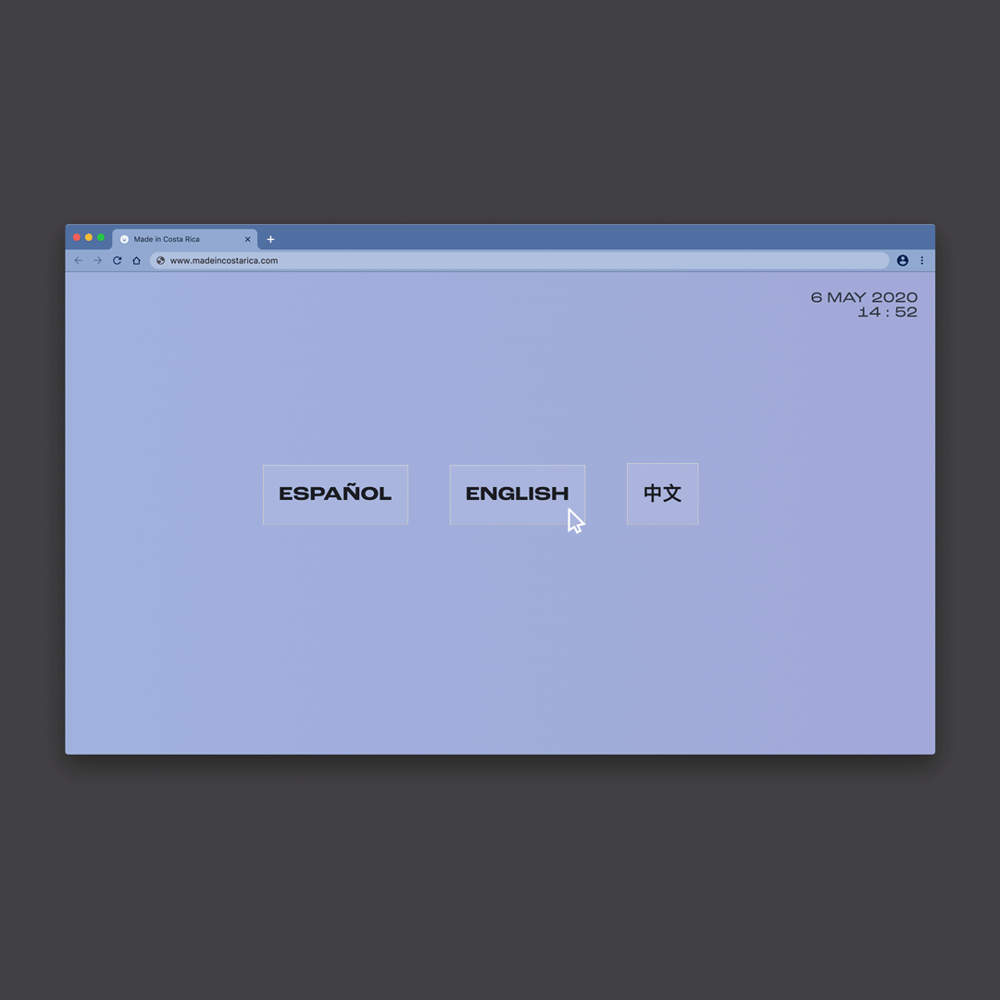
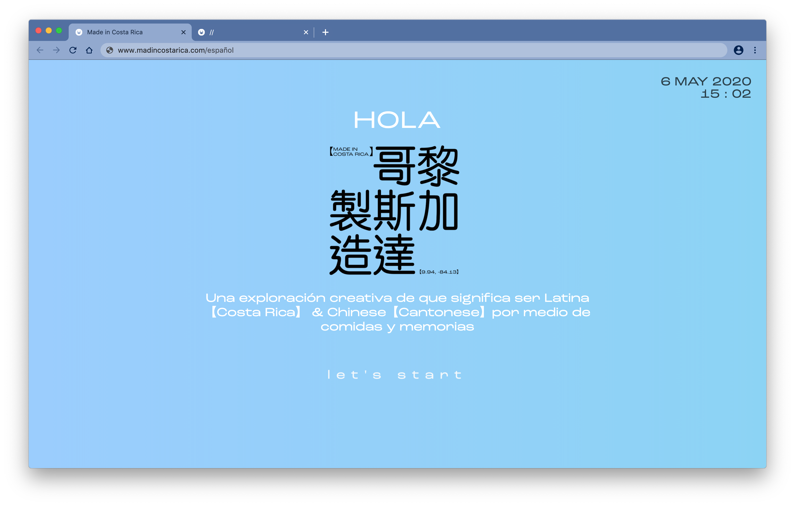
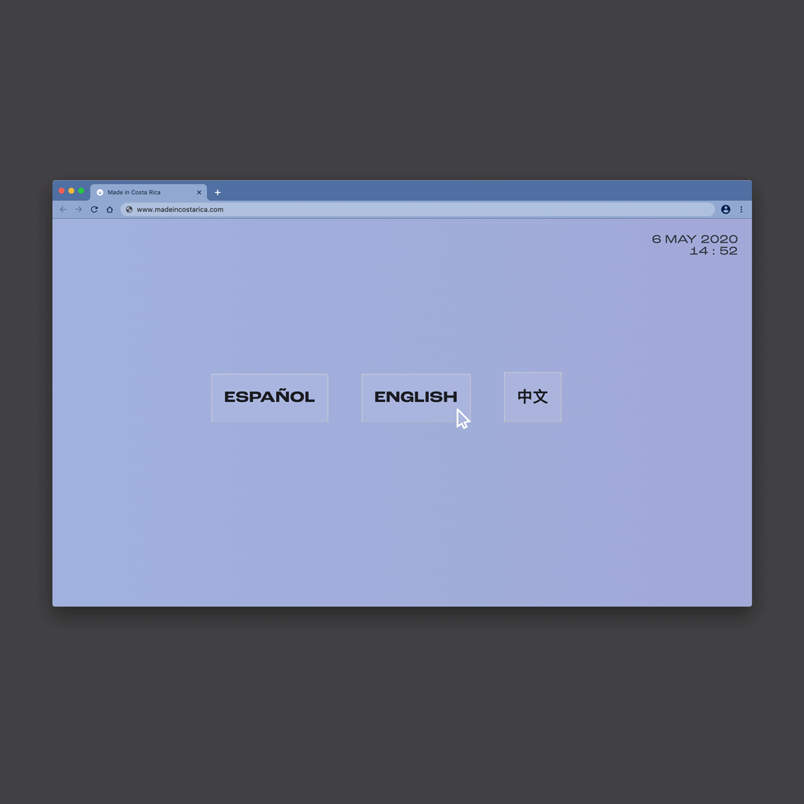
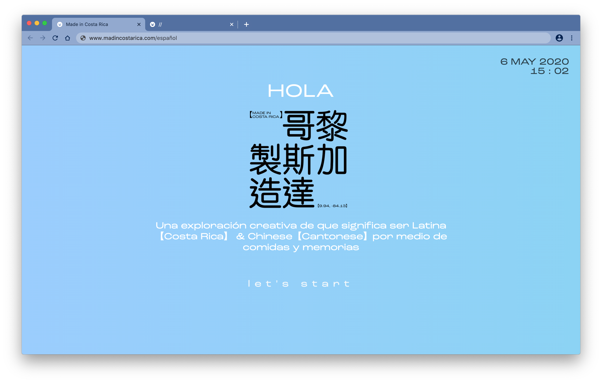

This project is my BFA Communication Design senior thesis project presented in May 2020. It is composed of a series of printed recipe books alongside an interactive website. Each component showcases black and white line illustrations and playful text set in a grotesk sans serif. This collection of recipes and tips illustrate clearly each step of the cooking process while highlighting staple foods from Costa Rican and Chinese cuisines. This project breaks from the classic cooking book norms while allowing me to explore and share my cultures and traditions through a new lens.


 


